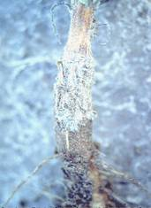
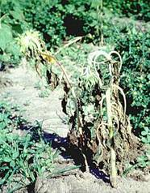

| Home |
| SUNFLOWER |
MAJOR DISEASES |
| 1. Root rot or charcoal rot |
| 2. Leaf blight |
| 3. Rust |
| 4. Head rot |
| 5. Powdery mildew |
| 6. Basal rot |
| 7. Necrosis |
| Questions |
| Download Notes |
SUNFLOWER :: MAJOR DISEASE :: BASAL ROT
Basal rot - Sclerotium rolfsii
Symptoms
Initial symptoms of the disease appear 40 days sowing. The infected plants can be identified by their sickly appearance. Plants dry up due to the disease infestation. The lower portion of stem is covered with white or brownish white fungal colonies. In extreme cases the plants wilts and dies. Dark brown lesions appear on the base of the stem near ground level, leading to withering. Large numbers of sclerotia are seen.
|  |  |
Symptoms |
|
Favourable Conditions
- Infection occurs in the crop in the month of July and August.
- The fungus survives through sclerotina in soil and plant debris.
Management
- Deep summer ploughing.
- Complete field and crop sanitation.
- Use of resistant or tolerant varieties.
- Collect and destroy plant debris.
- Apply Trichodermaon seed and soil to reduce wilt.
- Apply and incorporate fungus Coniothyrium minitans before sowing as it invades and destroy the pathogen in the soil.
- Seed treatment with Pseudomonas fluorescens or P.putida strains protect sunflower from Sclerotinia infection during seedling stage.
- Seed treatment with captan or thiram at the rate of 3 g/kg of seed.
- Drenching the base of the plant with chestnut compound 3 g per litre of water.
- Seed treatment with carbendazim at 0.2% followed by the addition of Trichoderma harzianum 10 g/kg soil and spraying Carbendazim at 0.2 % to 15 days old seedling.